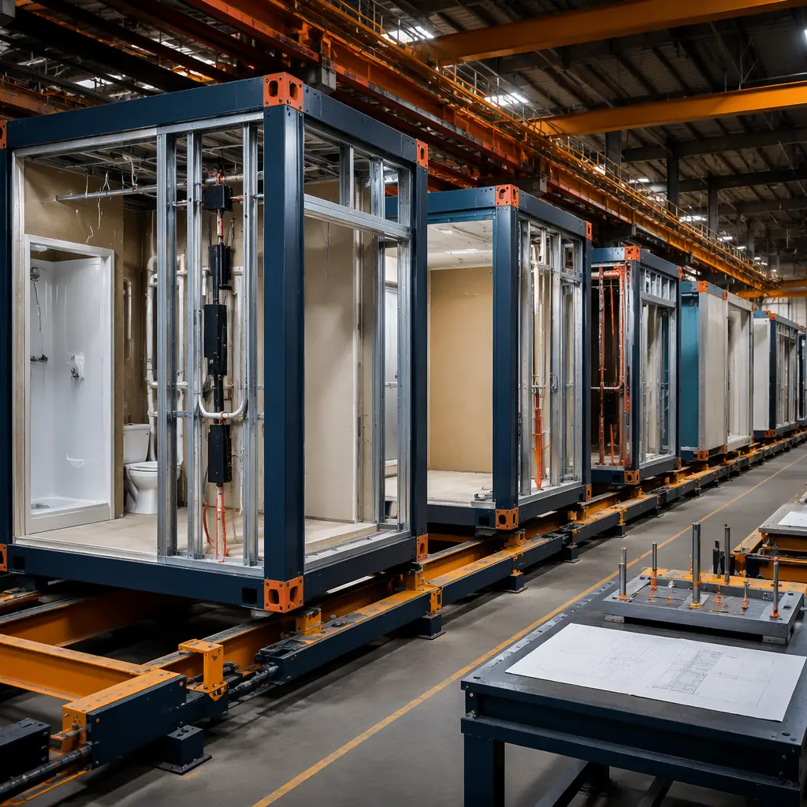
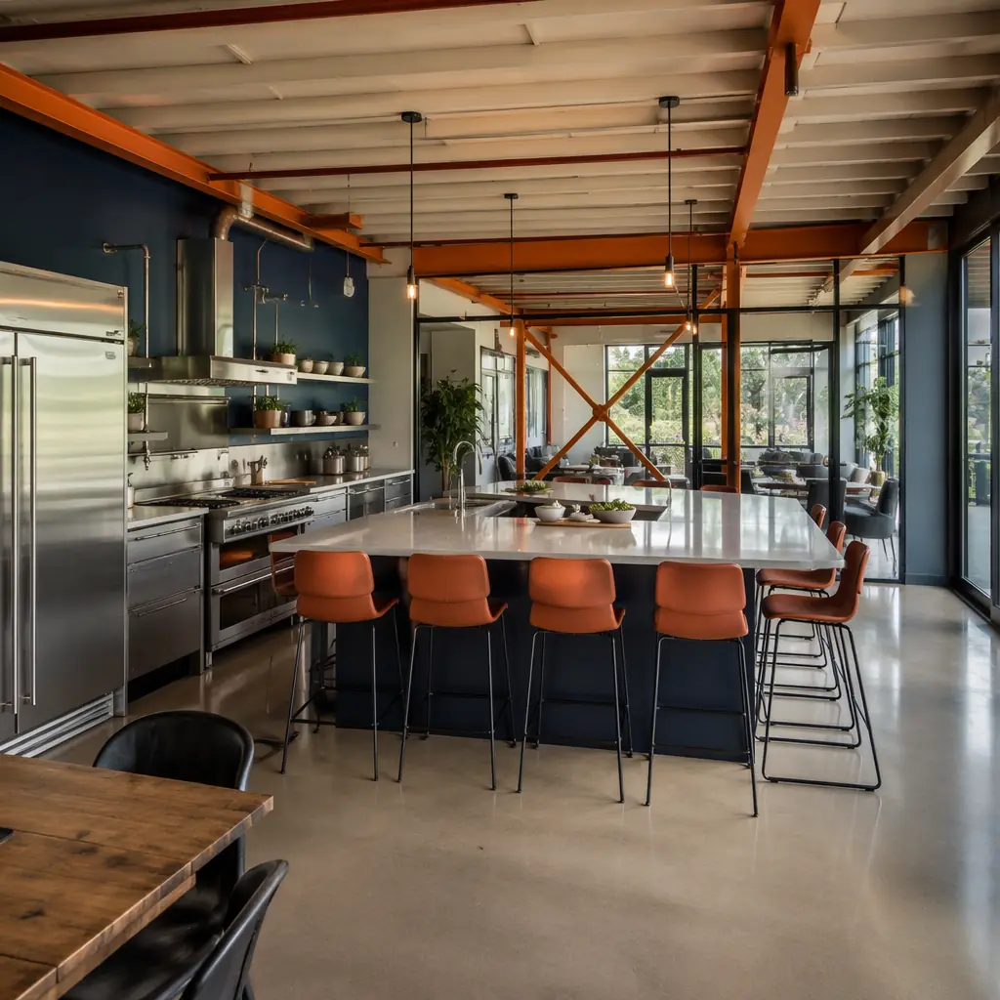
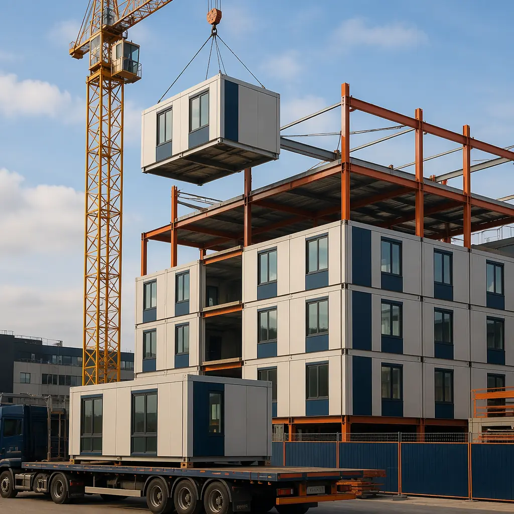

Co-living is the fastest-growing segment of urban residential development, and it is structurally suited to modular construction in ways that conventional apartments are not. A co-living building is fundamentally a hotel operating on 12-month leases: private sleeping units paired with shared kitchens, lounges, and coworking spaces. The unit repetition, standardized MEP risers, and factory-finish interior requirements that make co-living operationally efficient are exactly the conditions where modular construction delivers its strongest time and cost advantages. For developers evaluating their first co-living project, modular delivery can compress the construction timeline by 40% and eliminate the finish-quality variance that traditional multi-trade sequencing introduces into high-density residential projects.

Why Co-Living Economics Favor Modular Construction
Co-living development operates on a fundamentally different financial model than conventional multifamily. A standard apartment project earns $2.50–$3.50 per square foot in rent. A well-executed co-living project in the same neighborhood earns $4.50–$6.50 per square foot by converting common area into revenue-generating shared amenity and leasing by the bedroom rather than the unit. This higher revenue density makes construction speed disproportionately valuable — every month of earlier occupancy captures $40,000–$80,000 in additional rent for a 100-unit co-living building.
The unit repetition advantage. A typical 120-unit co-living building might contain only 3–4 distinct module types: a standard private suite (180–220 sq ft with en-suite bathroom), a premium corner suite (240–280 sq ft with additional window), and possibly an ADA-compliant variant. When 90% of the living units are identical, factory production achieves efficiencies that a conventional site simply cannot match — the 30th module off the line costs 15–20% less to produce than the 3rd, because every workstation, material cut, and quality check has been optimized through repetition. This is the same production logic that makes modular hotels profitable; see our analysis of how modular hotels cut construction time by 60% for the operational parallels.
Shared amenity as pre-engineered modules. The co-living amenity stack — communal kitchen, coworking lounge, fitness room, laundry, rooftop terrace access — typically occupies 25–35% of total building area. These spaces are high-MEP-density environments (commercial kitchen exhaust, multiple data drops, structured cabling for AV) that benefit enormously from factory installation. A communal kitchen module arrives with plumbing rough-in pressure-tested, range hood ductwork sealed, and floor drains sloped to code — eliminating the three separate trade visits (plumber, HVAC, tiler) that a site-built communal kitchen requires.
For developers evaluating total project economics, the cost predictability of modular delivery is as valuable as the speed. Our modular construction ROI guide provides a framework for comparing modular vs. conventional total development costs across different project types and markets.

Unit Mix and Module Typologies
Co-living unit economics are driven by the ratio of private square footage to shared square footage. The industry sweet spot is 65–75% private / 25–35% shared. Modular construction makes it straightforward to dial this ratio because modules are designed as complete assemblies with known dimensions and MEP requirements before the foundation is even poured:
| Module Type | Dimensions | Features | % of Mix |
|---|---|---|---|
| Standard suite | 12′ × 18′ | En-suite bath, kitchenette, built-in storage | 70–80% |
| Premium suite | 12′ × 22′ | Larger bath, walk-in closet, dual-aspect windows | 10–15% |
| ADA suite | 14′ × 18′ | Roll-in shower, accessible kitchenette, wider doors | 5–8% |
| Shared kitchen module | 16′ × 30′ | Commercial-grade appliances, 4–6 cooking stations, island seating | 1 per 20–25 units |
| Coworking/lounge module | 16′ × 40′ | Data drops, AV infrastructure, flexible furniture zones | 1 per 30–40 units |
The operational advantage of this typology approach is that co-living operators can fine-tune the unit mix for each market without redesigning the building. A project in San Francisco's SoMa district might push the premium suite ratio to 20% and add a second coworking module for the tech-worker demographic. The same building design in a university-adjacent location might shift to 85% standard suites and add a second communal kitchen. Because modules are dimensionally standardized, these mix adjustments don't trigger structural re-engineering. For projects that need even more design flexibility, our guide to modular building design flexibility covers the full range of customization options available within modular systems.

Zoning and Regulatory Pathways for Co-Living
Co-living occupies a gray zone in most municipal zoning codes, which were written for a world of single-family homes and conventional apartments. Developers typically navigate one of three pathways:
Rooming house / boarding house classification. The legacy framework that predates modern co-living. Often carries occupancy limits (4–6 unrelated adults) and parking minimums designed for single-family conversions, not purpose-built co-living. Some progressive municipalities (Seattle, Portland, Minneapolis) have updated these codes to recognize co-living as a distinct use; most have not.
Multifamily / R-2 classification. The most common pathway. The building is permitted as a standard apartment building under IBC R-2, with the co-living operational model handled through the lease structure rather than the building code. This works when the unit definition aligns with code — each private suite with its own bathroom meets the "dwelling unit" definition in most jurisdictions. The shared amenities are classified as "accessory uses" to the residential.
Hotel / R-1 classification. Used for co-living buildings with very small private units (under 150 sq ft) or where local code explicitly defines co-living as transient occupancy. This pathway triggers stricter fire suppression requirements, accessibility rules, and often higher impact fees. It's generally the least favorable route but sometimes the only available one in jurisdictions that have not updated their codes.
Modular construction simplifies the compliance path because factory documentation provides the material certifications, fire-rated assembly test reports, and MEP commissioning records that building officials request during plan review. For projects in seismically active regions, our LEED certification guide and fire safety resources cover the compliance documentation trail that modular manufacturing generates automatically.
Co-Living ROI — The Numbers
A 100-unit co-living project in a Tier 2 US city (Austin, Denver, Nashville) using modular construction delivers approximately:
- Construction timeline: 10–12 months (modular) vs 16–20 months (conventional) — 6–8 months of accelerated lease-up revenue
- Hard cost: $195–$230/sq ft (modular, including factory fit-out) vs $175–$210/sq ft (conventional stick-built shell only)
- Revenue per sq ft: $4.50–$6.00/month (co-living) vs $2.50–$3.50/month (conventional apartments in the same submarket)
- NOI margin: 55–65% (co-living benefits from shared utility metering and centralized operations) vs 50–58% (conventional multifamily)
- Cap rate at stabilization: 5.0–5.75% (co-living trades at a 25–50 bps premium to conventional multifamily in established markets)
The developer's total development cost premium for modular construction (typically 8–12% over conventional framing) is recovered through three mechanisms: 6–8 months of accelerated lease-up at $4.50+/sq ft, 3–5% lower construction interest carry from the compressed timeline, and 15–20% reduction in punch-list and warranty callbacks from factory quality control. For a comprehensive analysis of modular development financing, see our modular construction financing guide covering loan structures, insurance, and funding models for developers.

Operator Perspective — Why Modular Works for Co-Living Management
Co-living operators care about three things that modular construction delivers better than conventional: finish consistency across 100+ identical units, MEP accessibility for maintenance, and acoustic separation between units. When a co-living resident moves out and the operator has 4 hours to turn the unit for the next tenant, a factory-finished module with documented paint codes, flooring SKUs, and fixture models means the maintenance team can do touch-ups without color-matching guesswork. When a plumbing issue affects one unit, factory pressure-test documentation tells the maintenance team exactly where the riser connections are located behind the wall — no exploratory drywall cutting.
Acoustic performance is especially critical in co-living, where residents share walls with strangers rather than family members. Factory-built modules achieve consistent STC 50–55 ratings through staggered-stud wall assemblies with mineral wool insulation and resilient channels — assemblies that are documented and repeatable because they're built on jigs in controlled conditions, not field-framed by different crews on different days. For buildings targeting workforce housing price points, see our guide to modular workforce housing for the cost-quality tradeoffs that apply to attainable-rent projects.
Is Modular Co-Living Right for Your Project?
- Unit count above 60 — the repetition economics of modular production need sufficient volume to amortize factory setup
- Urban infill site — modular delivery reduces on-site construction activity by 70–80%, reducing neighbor complaints and street closure permits
- Standardized unit design — 3–4 suite types with high repetition across floors maximizes the factory efficiency advantage
- Time-to-market pressure — 6–8 months of accelerated lease-up at co-living rents justifies the modular cost premium
- Management-intensive operations model — factory documentation of every finish, fixture, and MEP component reduces lifecycle maintenance costs
MODURA has delivered over 500 projects across 18 countries, with 4,000 modules of annual production capacity across four ISO 9001 and ISO 14001 certified factories. Our manufacturing process applies the same ±2mm tolerance to every module — whether it's a hospital wing, a student housing unit, or a co-living suite. If you're evaluating a co-living development, we can provide a preliminary timeline, per-unit cost estimate, and unit mix analysis based on your target market and site constraints.